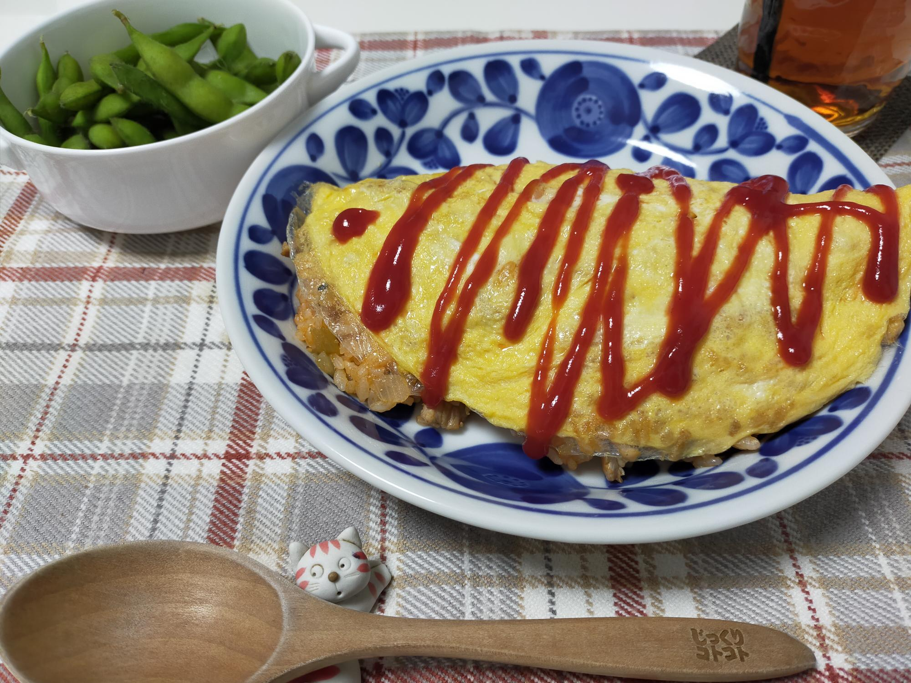

シンプルオムライス
材料・金額
| 材料 | 購入金額 | 使用量 | 金額 | kcal |
|---|---|---|---|---|
| 鶏もも肉1枚 | 300 | 1枚（皮とる） | 300 | 244 |
| 玉ねぎ1袋（3個入） | 213 | 半分 | 36 | 25 |
| 卵1pac | 192 | 3個 | 58 | 270 |
| ごはん5kg | 1,922 | 180g | 70 | 680 |
| その他調味料分 | - | - | - | 150 |
| 合計（2人分） | - | - | 464 | 1,369 |
| 枝豆1袋 | 214 | 1袋 | 214 | 168 |
| 合計（2人分） | - | - | 678 | 1,537 |
| 1人分（合計×0.5） | - | - | 339 | 769 |
作り方
- 玉ねぎをみじん切りにし、フライパンに入れて塩ひとつまみ・胡椒少々振る
- 皮を取った鶏もも肉を1cm角に切って、↑のフライパンにいれる
- 焦げないように中火で炒める（油はひかない）
- 玉ねぎが透明になり、鶏もも肉に火が通ったら、温かいごはんを入れる
- ケチャップ大４入れ、全体にケチャップがいきわたるようにある程度水分が飛ぶまで炒める
- 卵３個を溶いておく
- 別のフライパンに油小１を引いてキッチンペーパーで全体にのばす
- 十分にフライパンが温まったら、卵の半量で薄焼き卵を作り、ケチャップライス半量をのせる
- くるりと巻いて皿にのせて出来上がり
振り返り
オムライスの卵は固焼き派です。だんぜん。